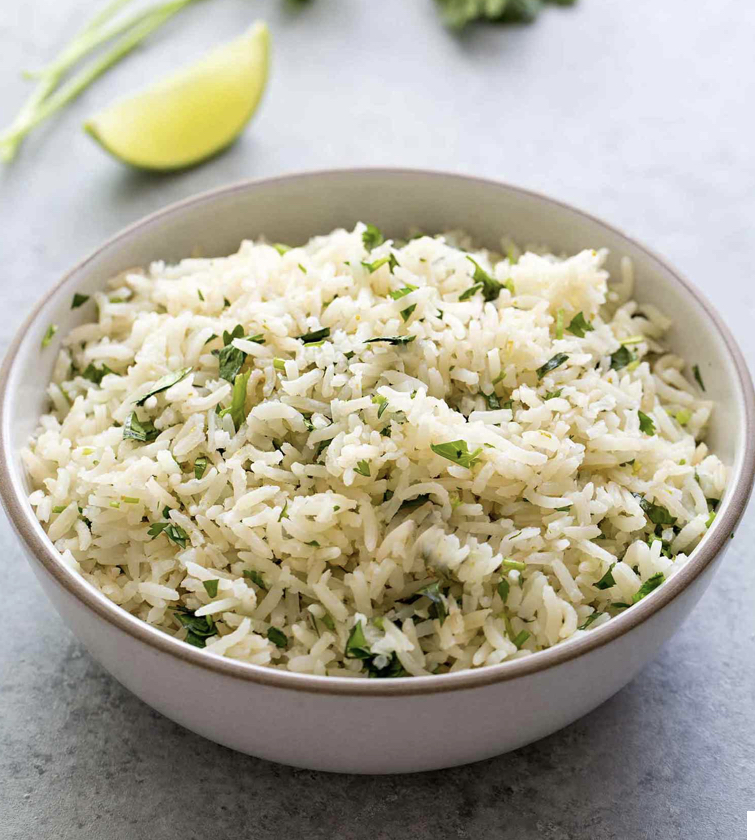

Cilantro Lime Rice

Description
This is the most delicious seasoned rice recipe that you will ever try. I make this recipe several times per month and eat it day after day with a variety of other sides and entrees. I never get sick of it!
This rice is also budget friendly, and let's be real... that is our top priority these days. Each serving costs less than two USD.
Ingredients
- 2 tablespoons extra virgin olive oil
- 1 1/2 cups basmati rice, or other long grain white rice
- 1 clove garlic, minced
- 2 1/4 cups water
- 1 teaspoon salt
- finely grated zest of one lime
- 3 tablesppons lime juice
- 1 cup lightly packed chopped cilantro(leaves and tender stems only)
Steps
- Brown the rice: Heat olive oil in a medium saucepan on medium high heat. Add the raw rice and stir to coat with the oil. Cook, stirring occasionally, until the rice has started to brown
- Add the garlic and cook another minute
- Add water, salt, and lime zest to the rice
- Bring to a rolling boil, then cover and lower the heat to low to maintain a very low simmer
- Cook undisturbed for 15 minutes
- Remove from heat and let sit for 10 more minutes
- Fluff rice with a fork
- Transfer rice into a serving bowl, then stir in lime juice and cilantro
- Serve while warm or store in the fridge in an air-tight container for up to one week